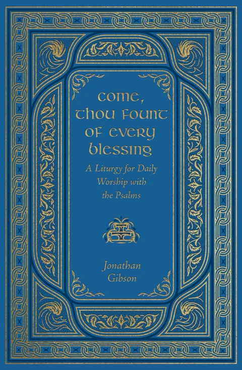
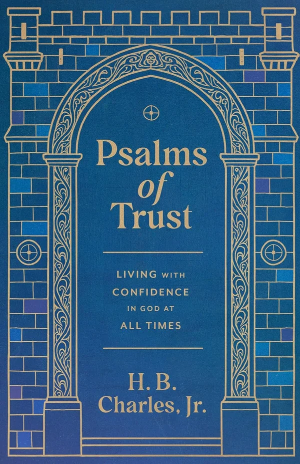

Christian Gift Guide 2026
Books worth wrapping. Everything here is already out, so nothing on this list will arrive after Christmas — and we have tried to cover the range, from a hymn a day to a five-volume Puritan set.
Every purchase supports independent bookstores.

Immanuel
Fifty-two museum-quality illustrations with devotions from Paul David Tripp. The most obviously giftable book of the year — buy it for someone who does not read much. See the book →

Candles in the Darkness
An Advent devotional drawn from the early and medieval church. Order this one in November if it is meant for December. See the book →

Come, Thou Fount of Every Blessing
A thirty-one-day liturgy for daily worship built on the Psalter, with historic prayers, creeds and catechisms. Handsome enough to give. See the book →

Awake, My Soul
365 hymns from the Middle Ages to the twentieth century, each with a short meditation. A year of singing, one page at a time. See the book →

The Works of Thomas Watson
Watson collected in a uniform set — the Puritan most likely to be read for pleasure. A serious gift for a serious reader. See the book →

Psalms of Trust
Ten psalms on trusting God when circumstances give no reason to, preached by a pastor who has had occasion to mean it. See the book →

Eat, Drink, and Be Merry
Ortlund on Ecclesiastes 11 — a short, glad book against dourness. Good for the friend who suspects Christianity is mostly about not enjoying things. See the book →

Scroll Less, Live More
Ten habits for living well with a phone, written for teenagers. The one on this list to give a fifteen-year-old. See the book →

John Wesley
Timothy George’s concise portrait of Wesley’s life, theology and legacy. A short biography that respects the reader’s time. See the book →